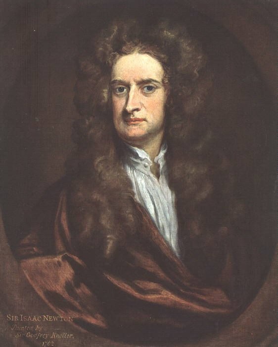

Later life:
In the 1690s, Isaac Newton wrote religious tracts, including one disputing the authenticity of 1 John 5:7, which remained unpublished until 1785. He served as a Member of Parliament for Cambridge University in 1689 and 1701 but made little impact. In 1696, he became Warden of the Royal Mint, later becoming Master in 1699. Newton took his role seriously, overseeing the Great Recoinage, combating counterfeiting, and successfully prosecuting 28 criminals, including William Chaloner. He improved minting technology, reducing coin weight variations and saving the Treasury a significant sum. In 1703, he became president of the Royal Society but clashed with Astronomer Royal John Flamsteed over the premature publication of Flamsteed's work.

Sir Isaac Newton
Personality:
Isaac Newton never married, and Voltaire claimed he had no romantic relationships. It is widely believed that Newton died a virgin, a notion supported by figures like Charles Hutton and John Maynard Keynes. He had a close friendship with Swiss mathematician Nicolas Fatio de Duillier, which ended abruptly in 1693, coinciding with Newton's nervous breakdown. Newton was modest about his achievements but could be competitive and held grudges. His famous quote about "standing on the shoulders of giants" has been debated as either a genuine statement of humility or a veiled insult toward Robert Hooke.
Death mask of Newton, photographed c. 1906